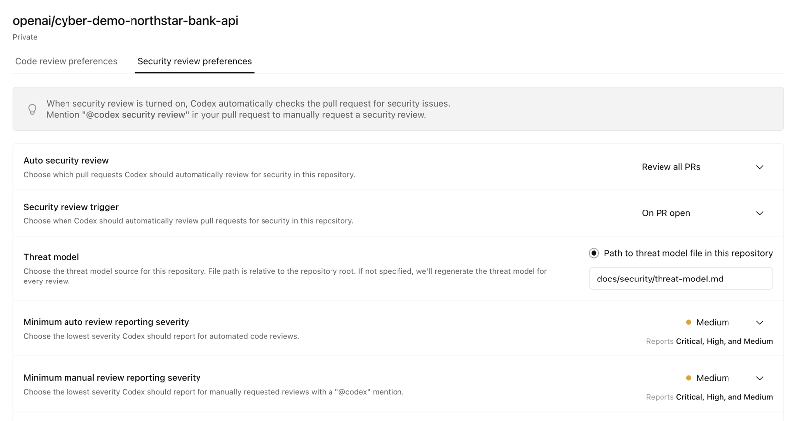
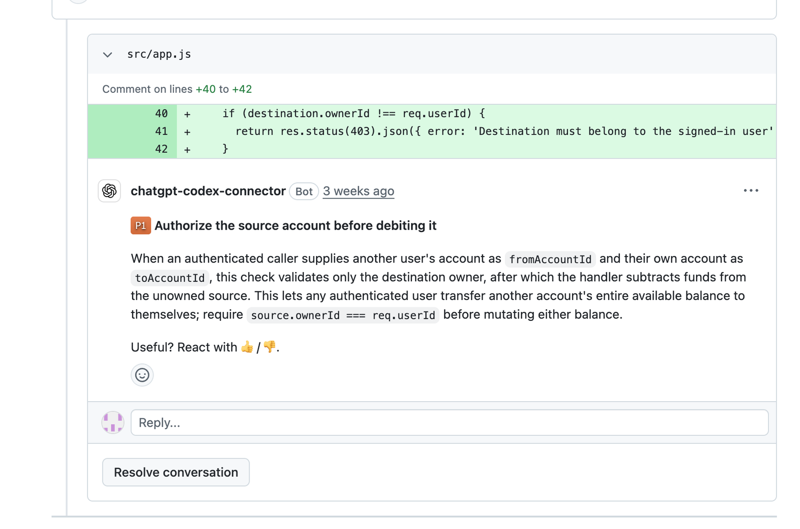
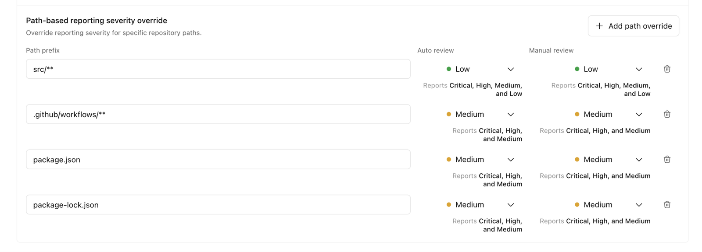
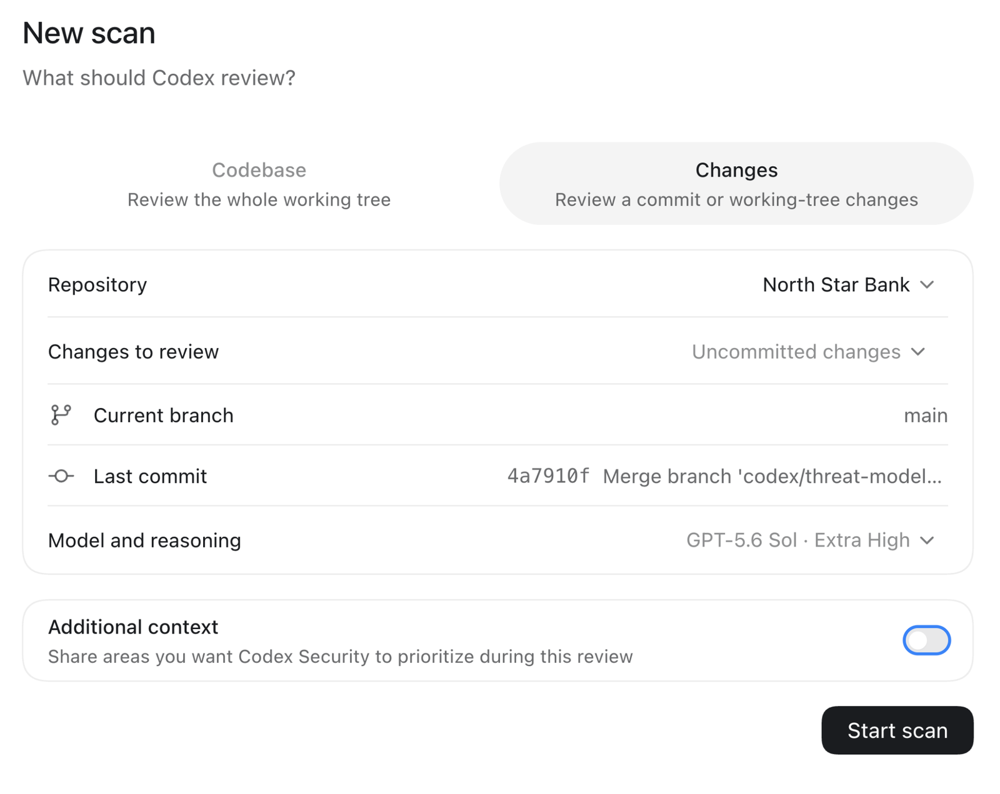
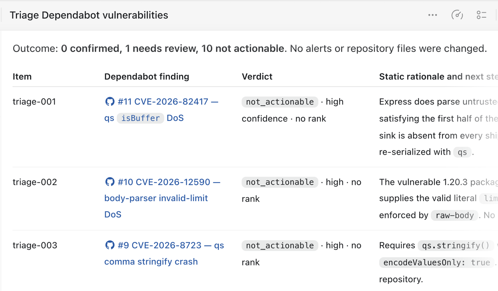

AI가 SDLC(소프트웨어 개발 수명 주기)를 가속하면서 보안 워크플로에 대한 부담이 커지고 있습니다. 보안 팀은 안전하지 않은 코드가 커밋되는 것을 애초에 막아야 하지만, 에이전트가 코드를 생성하고 수정하는 속도를 PR에 대한 수동 보안 리뷰가 따라가지 못합니다.
애플리케이션 보안 프로그램은 지금까지 사람이 개발하는 속도에 맞춰 운영되어 왔습니다. 구현 전에 설계 리뷰를 하고, 위험도가 가장 높은 풀 리퀘스트를 수동으로 점검하며, 쌓여 있는 취약점 백로그를 주기적으로 분류하는 방식입니다. 이 속도를 따라잡으려면 이제 에이전트 기반 SDLC의 속도에 맞는 에이전트 기반 보안 워크플로(agentic security workflow)를 도입해야 합니다.
이 글에서는 에이전트 기반 보안 워크플로를 위한 네 가지 원칙을 소개한 다음, Codex Security와 CLI를 통해 이러한 워크플로를 구축하고 운영하는 방법을 설명합니다.
에이전트 기반 보안 워크플로를 위한 네 가지 원칙
보안 리뷰 역량을 확대하려면 변경 사항을 평가할 명확한 기준과, 팀이 그 결과를 검토할 명확한 방법이 필요합니다. 보안 에이전트를 개발 과정에 통합할 때는 다음 네 가지 원칙을 권장합니다.
-
에이전트에게 시스템별 컨텍스트 제공
에이전트가 변경 사항을 평가하려면 애플리케이션의 자산, 신뢰 경계, 보안 요구 사항을 이해해야 합니다. 위협 모델, 저장소 보안 정책, 아키텍처 문서를 통해 이러한 지식을 에이전트에게 제공할 수 있습니다. 이러한 산출물을 정기적으로 검토하고 최신 상태로 유지하면 에이전트가 조사를 수행할 때 신뢰할 수 있는 기반이 됩니다.
-
개발 과정에 리뷰 통합
보안 피드백은 변경 작업이 진행 중일 때 개발자에게 전달되어야 합니다. 리뷰를 로컬 작업, 풀 리퀘스트, CI 워크플로에 연결하고, 언제 실행할지 트리거를 명확히 정의하십시오. 이렇게 하면 보안 리뷰가 개발 프로세스의 일관된 일부가 됩니다.
-
리뷰 범위와 보고 임계값을 의도적으로 설정
리뷰 범위는 변경 사항과 그 영향을 받을 수 있는 구성 요소를 반영해야 합니다. diff 스캔, 구성 요소 평가, 전체 저장소 스캔은 각각 목적이 다릅니다. 보고 임계값도 위험도를 반영하여, 인증이나 결제처럼 민감한 영역에 적절한 관심을 기울이도록 설정해야 합니다.
-
검토할 수 있는 형태로 결과 제공
리뷰어에게는 발견 사항을 평가하고 어떤 조치를 취할지 판단할 수 있을 만큼의 정보가 필요합니다. 보고서에는 관련 코드 위치, 근거, 심각도, 신뢰도, 해결 방안 가이드가 담겨야 합니다. 또한 무엇을 검토했고, 무엇을 제외했으며, 무엇을 보류했는지도 밝혀야 팀이 조사의 한계를 이해할 수 있습니다.
보안 리뷰를 위한 컨텍스트 구성
위협 모델, AGENTS.md, SECURITY.md, 지식 베이스의 차이
AGENTS.md는 일관된 기대 수준을 정립하는 공통 엔지니어링 지침을 담습니다. SECURITY.md는 조직이 그 현실을 어떻게 평가하고 보고하기를 원하는지 Codex에 알려줍니다. 위협 모델(threat model)은 시스템의 보안 현실을 설명합니다. 세 문서는 서로 겹치지만, 위협 모델은 보통 더 넓은 정책의 일부입니다.
예를 들어 위협 모델에는 자산, 진입점, 공격자가 제어할 수 있는 입력, 신뢰 경계, 인증 관련 가정, 권한이 필요한 작업, 위험한 구성 요소에 대한 내용이 포함됩니다. 이를 docs/security/threat-model.md라는 별도 파일로 커밋하면 Codex Security가 풀 리퀘스트 리뷰와 보안 스캔 중에 참조할 수 있습니다.
<!-- docs/security/threat-model.md -->
# Threat Model
The public API accepts untrusted JSON and file uploads.
Requests cross from the internet-facing API into internal billing and
identity services. Attackers are unauthenticated users or compromised
tenant accounts. Protect tenant data, billing mutations, and service credentials.
SECURITY.md 파일은 조직이 그 현실을 어떻게 평가하고 보고하기를 원하는지 Codex에 알려줍니다.
<!-- SECURITY.md -->
# Security Policy
## Security Invariants
- Every billing mutation must be authorized for the active tenant.
- Uploaded content must be parsed within explicit size and resource limits.
- Service credentials must never be returned to clients.
## Reportable Findings
Report realistic violations of tenant isolation, authentication bypass,
unsafe parsing, secret exposure, or unauthorized billing mutations.
## Severity Context
Cross-tenant access is Critical.
Single-tenant unauthorized mutation is High.
## Out of Scope
Development-only tools that cannot be included in production builds.
마지막으로, 지식 베이스(knowledge base)는 특정 스캔에 참고할 보조 문서를 제공합니다. 여기에는 아키텍처 문서, 정책, 추가 위협 모델, 또는 CLI 스캐너가 고려해야 할 운영 컨텍스트가 포함될 수 있습니다. 다음은 코드베이스에 대해 보안 스캔을 실행할 때 CLI에 전달할 수 있는 Markdown 아키텍처 문서의 예시입니다.
<!-- docs/security/payment-service-context.md -->
# Payment Service Security Context
## Purpose
The payment service creates charges, issues refunds, and stores references
to payment-provider customers. It does not store full card numbers or CVVs.
## Deployment and Exposure
- `POST /api/payments` is internet-facing through the API gateway.
- `POST /internal/refunds` is reachable only from the support service.
- Background workers consume messages from the `payment-events` queue.
- The service runs with access to the payment-provider API and billing database.
## Authentication and Authorization
- Public endpoints use JWTs issued by the identity service.
- The API gateway validates signatures, issuer, and expiration.
- This service remains responsible for tenant authorization.
- Internal requests use workload identity; network location alone is not trusted.
- Refunds above £1,000 require a previously recorded approval.
## Trust Boundaries
1. Internet client → API gateway
2. API gateway → payment service
3. Payment service → payment provider
4. Payment service → billing database
5. Message producers → `payment-events` consumer
Inputs crossing any of these boundaries must be treated as untrusted unless
the receiving component performs the documented validation.
## Sensitive Assets and Operations
- Payment-provider API credentials
- Customer-to-provider identifier mappings
- Charge creation
- Refund issuance
- Webhook signature secrets
- Tenant billing history
## Important Data Flows
### Creating a charge
1. The API receives an authenticated request containing an order identifier.
2. The service retrieves the order using both tenant ID and order ID.
3. The service calculates the amount from server-side order data.
4. The service creates the provider charge with an idempotency key.
5. The resulting provider identifier is stored in the billing database.
Client-supplied amounts must never be passed directly to the provider.
### Processing a webhook
1. The raw request body is retained.
2. The provider signature is verified over the raw bytes.
3. The event timestamp must be within five minutes.
4. Duplicate event IDs are ignored.
5. State changes occur only after all validation succeeds.
## Relevant Code
- `src/http/payments.ts`: public payment endpoints
- `src/http/refunds.ts`: refund endpoints
- `src/webhooks/provider.ts`: webhook validation
- `src/workers/payment-events.ts`: asynchronous event processing
- `src/auth/tenant.ts`: tenant authorization
- `src/provider/client.ts`: provider API wrapper
## Security Assumptions
- The identity service is trusted to authenticate users, but not to authorize
access to payment records.
- Queue publishers may be compromised; consumers must validate message content.
- API-gateway authentication does not replace service-level tenant checks.
- Provider webhook payloads are attacker-controlled until signature validation
completes.
## Known Limitations
- Legacy refunds created before 2025 do not have idempotency keys.
- Webhook replay protection is local to one region.
- The development payment-provider emulator does not validate signatures.
이 문서는 다음 명령어로 스캔에 전달할 수 있습니다.
npx @openai/codex-security scan . \
--knowledge-base docs/security/payment-service-context.md
이를 모두 종합하면 다음과 같은 구성이 유용할 수 있습니다.
SECURITY.md
docs/security/
├── threat-model.md
├── architecture.md
├── payment-service-context.md
├── authentication.md
└── deployment-boundaries.md
위협 모델 초기 구성
위협 모델을 커밋하는 것은 Codex가 보안 리뷰를 수행하는 방식을 알려주는 핵심 요소입니다. Codex에서 위협 모델 스킬을 호출하여 위협 모델을 초기화한 뒤 커밋할 수 있습니다.
이 저장소의 위협 모델 을 생성하십시오. 진입점과 신뢰할 수 없는 입력, 민감한 데이터 경로, 권한이 필요한 작업을 포함해야 합니다. GPT-6.1 SolExtra High
Codex에서 $threat-model을 입력하기만 하면 위협 모델 스킬을 호출할 수 있습니다. 위협 모델이 생성되면 /docs/security 아래에 있는 저장소에 커밋한 다음, 선택한 저장소의 Codex Cloud 설정에서 해당 위협 모델에 연결하십시오. 위협 모델을 지정하지 않으면 Codex는 보안 리뷰를 할 때마다 위협 모델을 새로 생성합니다.

위협 모델을 생성할 때는 보완 통제(compensating controls)나 다른 서비스와 공유하는 책임처럼, 코드만으로는 확인할 수 없는 가정에 특히 주의하십시오.
더 좋은 예시가 필요하십니까? 내부 개발자 포털을 구축하기 위한 오픈 소스 프레임워크인 Backstage의 신뢰 모델을 살펴보십시오. 자동으로 생성된 모델은 인증 플러그인과 카탈로그 플러그인이 서로 다른 호스트에서 실행된다는 이유로 두 플러그인이 격리되어 있다고 판단할 수 있습니다. 하지만 Backstage의 위협 모델은 카탈로그 플러그인이 인증 플러그인의 데이터베이스에 여전히 접근할 수 있다면, 이러한 분리가 보안 경계를 형성하지 못한다고 설명합니다.
모델을 수정하면 리뷰에서 배포 구성과 접근 권한 부여 내역을 살펴보고, 다른 플러그인이 인증 데이터를 읽거나 수정할 수 있는지 판단할 수 있습니다. 이렇게 하면 아키텍처상의 가정이 요구사항으로 바뀝니다. 데이터베이스 접근, 공유 캐시, 플러그인 배치가 변경되면 해당 경계를 다시 검토해야 합니다.
마지막으로, 진입점, 신뢰 경계, 권한이 필요한 작업이 변경될 때는 위협 모델(threat model)을 다시 검토하는 것을 잊지 마십시오. 이러한 변경은 리뷰 컨텍스트를 애플리케이션과 일치하게 유지하는 데 유용한 계기가 됩니다.
SECURITY.md 초안 생성
$define-security-policy 스킬을 사용하면 리포지토리 안에 초기 보안 정책을 생성할 수 있습니다.
Define Security Policy Northstar Bank API용 정책을 정의합니다. 포함되어야 할 핵심 정책은 다음과 같습니다:
인증과 인가:
- 공개되지 않은 모든 엔드포인트는 호출자를 인증해야 합니다.
- 세션과 토큰은 발급자(issuer), 대상(audience), 서명, 만료, 폐기 여부, 의도된 인증 컨텍스트를 검증해야 합니다.
- 인증 실패 시에는 접근을 차단하는 방식(fail closed)으로 처리해야 합니다.
- 민감한 작업은 필요에 따라 최근 인증 또는 더 강력한 인증을 요구해야 합니다.
- 비밀번호 재설정, 계정 복구, MFA, 신원 연결 흐름은 계정 탈취를 허용해서는 안 됩니다. GPT-6.1 SolExtra High
강력한 보안 정책에는 애플리케이션이 어떻게 동작하는지에 대한 상세한 내용이 포함되어야 합니다. 다음은 Codex에 SECURITY.md에 포함하도록 요청할 수 있는 내용의 예시입니다:
<!-- SECURITY.md -->
### Authentication and Authorization
- Every non-public endpoint must authenticate the caller.
- Sessions and tokens must be validated for issuer, audience, signature, expiry, revocation, and intended authentication context.
- Authentication failures must fail closed.
- Sensitive operations must require recent or stronger authentication where appropriate.
- Password-reset, account-recovery, MFA, and identity-linking flows must not permit account takeover.
- Authentication secrets and tokens must never appear in logs, URLs, analytics, or error responses.
- Authorization must occur before every read, mutation, transaction, export, or administrative action.
- Possession of a valid account or resource identifier never proves authorization.
- Customer, account, and tenant isolation must hold across list, detail, search, bulk, export, and indirect-reference endpoints.
- Server-side authorization must not rely on client-supplied roles, ownership fields, prices, balances, or approval state.
- Administrative and service-to-service permissions must use least privilege.
- Failures allowing cross-customer access are reportable even when only one endpoint is affected.
### Transaction and ledger integrity
- Transactions must be authorized against the authenticated customer and eligible source account.
- Amounts, currencies, destinations, fees, limits, and approval state must be validated server-side.
- Transaction requests must be protected against replay, duplication, race conditions, and idempotency-key confusion.
- Balance checks and ledger updates must be atomic.
- Posted ledger entries must be immutable or corrected through auditable compensating entries.
- High-risk transactions must enforce applicable limits, step-up authentication, approval, or fraud controls.
- No failure path may produce an ambiguous transaction state without reconciliation.
### Data protection
- Sensitive data must be encrypted in transit and at rest using approved controls.
- Secret material must come from an approved secret-management system rather than source code or ordinary configuration files.
- Logs, traces, metrics, support tooling, and security artifacts must exclude credentials and minimize personal and financial data.
- Data exports and backups must receive equivalent authorization and protection to primary data.
- Error responses must not expose internals, sensitive records, credentials, or authorization details.
- Retention and deletion behavior must follow the system’s approved data-governance requirements.
### Input and output handling
- Treat headers, paths, query parameters, bodies, uploaded files, webhook payloads, third-party responses, and stored customer content as untrusted.
- Apply schema, type, range, length, and format validation before security-sensitive use.
- Database access must use parameterized queries.
- Outbound requests must restrict destinations, protocols, redirects, DNS behavior, and response sizes.
- Parsers, uploads, decompression, and serialization must be bounded against resource exhaustion.
- Customer-controlled content must be safely encoded for its output context.
오픈 소스 비즈니스 인텔리전스 웹 애플리케이션인 Apache Superset을 예로 살펴보겠습니다. 이 애플리케이션은 데이터베이스에 연결하여 사용자가 데이터를 탐색하고, SQL Lab에서 SQL을 실행하며, 차트와 대시보드를 만들어 공유할 수 있게 합니다. 오픈 소스 리포지토리 내 보안 정책에는 역할과 기능, 그리고 비동기 실행과 실시간 알림이 동작하는 방식에 대한 상세한 컨텍스트가 정리되어 있습니다. 예를 들어 이 정책은 다음과 같이 정의합니다:
비동기 실행 경로는 별도의 데이터 접근 권한을 만들어 내지 않습니다. 백그라운드 작업은 차트 데이터 읽기나 SQL Lab을 통한 SQL 실행처럼 이미 인가된 작업의 연장입니다. 작업을 시작하는 route, command 또는 scheduler는 작업을 생성하기 전에 동기 경로에서 적용했을 route 수준 및 객체 수준 검사를 동일하게 적용해야 합니다. 또한 행 수준 보안(row-level security), 가장(impersonation), 임베디드 게스트 토큰 범위 또는 이와 유사한 제어가 결과에 영향을 미치는 경우, 워커는 작업을 시작한 주체(principal)의 유효 신원(effective identity)으로 실행되어야 합니다.
이 정책은 실행이 요청에서 백그라운드 워커로 넘어가는 동안에도 무엇이 계속 참이어야 하는지를 정의하므로, 취약점 보고가 더 정밀해집니다. 리뷰어는 작업을 시작한 사용자, 요청된 리소스, 작업 생성 전의 인가 검사, 실행 중에 사용된 신원을 추적할 수 있습니다. 그 결과 보안 연구원과 에이전트가 작성한 보고서 모두 정책 요구사항, 이를 위반할 수 있는 코드 경로, 공격자의 초기 권한, 그로 인해 발생하는 무단 기능을 검증할 수 있습니다.
Codex Security
컨텍스트가 마련되었다면, 팀의 기존 개발 프로세스와 맞는 리뷰 워크플로를 선택해야 합니다. 로컬 리뷰는 PR을 열기 전에 개발자에게 피드백을 제공합니다. 자동 PR 리뷰는 일관된 팀 차원의 점검 지점을 제공합니다. CLI는 명시적인 대상, 저장된 아티팩트, 맞춤형 CI 통합이 필요한 워크플로를 지원합니다.
여러 워크플로를 함께 사용할 수도 있습니다. 다만 하나의 워크플로로 시작해 팀이 잘 아는 변경에서 결과를 확인하고, 리뷰가 사람들이 활용할 수 있는 근거를 만들어 내기 시작하면 그때 확장하는 것이 좋습니다.
GitHub Cloud의 Codex Security Review
GitHub Cloud에서 보안 리뷰를 자동화하는 가장 빠른 방법은 ChatGPT의 Security Review 기능을 사용하는 것입니다. 이 기능은 조직에서 사용할 수 있는 Codex Code Review와 동일한 제품 화면인 https://chatgpt.com/codex/cloud/settings/code-review에서 이용할 수 있습니다.
Codex Security Review는 PR diff, 이를 뒷받침하는 리포지토리 컨텍스트, 설정된 위협 모델 또는 보안 가이드를 분석하여 보안 관련 위험에 대해 Code Review보다 더 깊이 있게 살펴봅니다.
Code Review와 Security Review의 차이
Code Review는 코드 품질을 평가하는 폭넓은 엔지니어링 리뷰입니다. 예를 들어 Code Review는 “이 변경이 제품을 망가뜨리거나 심각한 엔지니어링 문제를 일으킬 수 있는가?”를 묻습니다. 잘못된 제어 흐름, 데이터 손상 또는 손실, 호환성 회귀, 잘못된 API 동작 같은 문제를 검토합니다. Code Review의 대상 사용자는 조직 내 소프트웨어 개발자입니다.
Codex Security는 동일한 PR 변경에 대해 보안 위험을 더 깊이 있게 평가하는 전문 기능입니다. Security Review는 취약점 수정을 담당하는 소프트웨어 개발자와, CI/CD 파이프라인 및 소스 코드 보안을 담당하는 애플리케이션 보안 엔지니어 모두를 위한 기능입니다. 인증 및 인가 우회, 테넌트 간 접근, 인젝션과 안전하지 않은 파싱, 민감 데이터 노출 같은 문제를 평가합니다.
보안 리뷰 설정
보안 리뷰를 설정하는 방법은 두 가지입니다. 자동 리뷰 보고(auto-review reporting)는 Security Review가 자동으로 실행될 때 Codex가 PR에 게시할 결과를 결정합니다. 기본값은 High이므로 High와 Critical 결과만 게시됩니다.
수동 리뷰 옵션은 누군가 Security Review를 명시적으로 요청한 뒤 Codex가 게시할 결과를 제어합니다. 기본값은 Medium이므로 Medium, High, Critical 결과가 게시됩니다.
설정이 완료되면 게시된 취약점이 PR 안에 표시됩니다.

자동 보고 임계값은 팀이 일관되게 조사할 수 있는 범위를 기준으로 정하는 것이 좋습니다. 특정 사안을 조사할 때는 수동 검토 설정을 사용하여 해당 질문과 관련된 추가 세부 정보를 확인하십시오.
경로 오버라이드 설정
경로 기반 보고는 GitHub PR에 게시되는 최소 심각도를 재정의(override)합니다. 저장소의 위험도가 균일한 경우는 드물기 때문에, 이 기능으로 다음과 같이 더 중요한 경로의 위험 임계값을 조정할 수 있습니다.
- 인증, 권한 부여, 결제, 암호화, CI 워크플로, 인프라 관련 경로의 임계값을 낮춥니다.
- 위험도가 낮거나 노이즈가 특히 많은 영역은 더 높은 임계값을 유지합니다.
선택한 저장소의 Codex Cloud 설정에서 경로 오버라이드를 수정할 수 있습니다. 아래 예시에서는 src/**에 대해 Low 이상의 취약점을 자동 검토하도록 설정했습니다. GitHub 워크플로나 의존성이 변경되는 경우에는 Medium 취약점부터 보고하도록 적용됩니다.

실무적인 출발점은 애플리케이션의 민감한 작업을 파악하고, 이를 담당 팀이 있는 경로와 연결하는 것입니다. 이 글 앞부분의 결제 서비스 예시라면 테넌트 권한 부여와 청구 변경 작업이 여기에 해당합니다. 저는 해당 경로를 담당하는 팀과 함께 검토하고, 놓친 문제가 초래할 결과를 반영하여 보고 임계값을 정할 것입니다.
앞서 본 Apache Superset 예시로 돌아가 보겠습니다. 저장소 전체에는 High 보고 임계값을 유지하되, 다음 경로에서는 임계값을 낮추는 것이 좋습니다.
| 저장소 기준 상대 경로 접두사 |
보고할 최소 심각도 |
추가 주의가 필요한 이유 |
superset/security/ |
Low |
중앙 권한 부여, 게스트 토큰, 비밀번호 복구, 세션 무효화를 담당하는 코드가 있는 경로입니다. |
superset/row_level_security/ |
Low |
사용자가 접근할 수 있는 데이터 행을 결정하는 정책을 제어하는 경로입니다. |
superset/sqllab/ 및 superset/commands/sql_lab/ |
Medium |
SQL 실행, 쿼리 권한 부여, 결과 조회, 내보내기를 중점적으로 다루는 경로입니다. |
superset/embedded/ |
Medium |
다른 애플리케이션에 임베드되는 대시보드의 경계를 중점적으로 다루는 경로입니다. |
이 설정을 적용하면 Codex Security Review는 위에 나열한 경로를 제외한 모든 경로에서 High 취약점만 보고합니다. 해당 경로에서는 코드의 민감도가 높으므로 Low와 Medium 취약점도 보고합니다.
Codex Desktop의 Codex Security Review
PR이나 커밋되지 않은 변경 사항을 더 인터랙티브하게 검토하려면 Codex의 보안 탭에서 검토를 실행할 수도 있습니다.

또는 Codex의 저장소 프로젝트에서 스킬을 호출하여 Codex에 요청할 수도 있습니다.
현재 브랜치의 변경 사항에 대해 Security Diff Scan을 실행해 주세요. GPT-6.1 SolExtra High
이 워크플로는 구현 내용이 아직 기억에 생생하여 발견 사항을 바로 조사할 수 있을 때 가장 유용합니다. 검토 결과가 권한 부여에 관한 가정을 지적하면, 변경 사항이 별도의 검토 대기열로 넘어가기 전에 호출자와 영향을 받는 작업을 직접 살펴볼 수 있습니다.
CLI의 Codex Security Review
커밋되지 않은 로컬 작업 검토
CLI를 사용하면 저장소와 보안 정책에 관한 컨텍스트를 미리 제공한 상태에서 커밋되지 않은 로컬 작업을 검토할 수 있습니다.
예시는 Git 체크아웃 디렉터리의 같은 셸에서 실행하십시오. 예시는 보안 정책이 SECURITY.md에 있고 보조 문서가 docs/security/에 있다고 가정합니다. 설정 단계에서는 스캔 결과를 저장할 임시 디렉터리를 만듭니다.
northstar_repo="$(git rev-parse --show-toplevel)"
northstar_kb="$northstar_repo/docs/security"
northstar_results="$(mktemp -d)"
npx @openai/codex-security scan "$northstar_repo" \
--working-tree \
--base HEAD \
--knowledge-base "$northstar_repo/SECURITY.md" \
--knowledge-base "$northstar_kb" \
--output-dir "$northstar_results/working-tree"
이 명령은 HEAD를 기준으로 스테이징된 변경 사항과 스테이징되지 않은 변경 사항을 모두 검토합니다.
시작하기 전에 작업 트리에 평가하려는 변경 사항이 들어 있는지 반드시 확인하십시오. 관련 없는 수정이 섞이면 조사 범위가 넓어지고, 발견 사항을 검토를 시작하게 된 질문과 연결하기 어려워질 수 있습니다.
PR 또는 브랜치 커밋 검토
PR이나 브랜치의 보안 문제를 검토하는 방법도 있습니다. 검토할 브랜치를 체크아웃하고 대상 브랜치를 fetch합니다. 이 예시에서는 origin/main을 사용합니다.
northstar_pr_base="$(git -C "$northstar_repo" merge-base origin/main HEAD)"
npx @openai/codex-security scan "$northstar_repo" \
--diff "$northstar_pr_base" \
--head HEAD \
--knowledge-base "$northstar_repo/SECURITY.md" \
--knowledge-base "$northstar_kb" \
--output-dir "$northstar_results/branch"
diff 스캔은 제안된 변경 사항만 평가하며 저장소 전체를 스캔하지 않는다는 점에 유의하십시오. 스캔이 완료되면 출력 디렉터리에 다음 파일이 생성됩니다.
report.md: 읽기 쉬운 형태의 검토 보고서scan-manifest.json: 정확한 base, head, 대상, 산출물을 확인하는 파일findings.json: 심각도, 신뢰도, 위치, 해결 방안을 제시하는 파일coverage.json: 검토한 영역, 제외 항목, 보류된 작업, 완전성을 식별하는 파일
모노레포 스캔
모노레포에서는 공유 라이브러리를 변경하면 여러 서비스에 영향을 줄 수 있습니다. Codex가 이러한 상호작용을 검토할 수 있도록 충분한 컨텍스트를 제공해야 하며, 어떤 구성 요소와 검사가 필요한지는 CI가 결정합니다.
저장소 컨텍스트
공통 엔지니어링 지침은 AGENTS.md에, 보안 요구 사항은 SECURITY.md에 보관하십시오. 일반적인 저장소 구조는 다음과 같습니다.
monorepo/
├── AGENTS.md
├── SECURITY.md
├── docs/security/
│ ├── architecture.md
│ └── threat-model.md
├── packages/auth/
└── services/
├── billing/
└── reporting/
기존의 소유권(ownership) 및 빌드 메타데이터를 활용해 각 컴포넌트를 해당 컴포넌트의 의존성, 소비자(consumer), 테스트와 연결합니다. 예를 들어 packages/auth를 변경하면 두 서비스의 파일이 변경되지 않았더라도 두 서비스를 모두 검토해야 할 수 있습니다. 이러한 범위 매핑은 조직에서 직접 관리하며, Codex를 추가한다고 해서 자동으로 구성되지는 않습니다.
컴포넌트 평가
대규모 저장소라고 해서 PR마다 전체 코드베이스를 스캔해야 하는 것은 아닙니다. 모노레포에 독립된 서비스나 패키지가 여러 개 있다면 경로 스캔(path scan)을 사용하는 방법이 있습니다. 공유 라이브러리와 해당 라이브러리를 사용하는 소비자를 함께 평가하려면 --path를 반복해서 지정합니다.
npx @openai/codex-security scan "$northstar_repo" \
--path packages/auth \
--path services/billing \
--path services/reporting \
--knowledge-base "$northstar_repo/SECURITY.md" \
--knowledge-base "$northstar_kb" \
--output-dir "$northstar_results/paths"
이 명령은 저장소 전체가 아니라 선택한 경로만 스캔합니다.
PR 및 diff 스캔
PR을 스캔할 때는 인증된 GitHub 메타데이터에서 가져온 정확한 base 커밋 해시와 head 커밋 해시를 사용합니다. 두 리비전과 해당 이력이 모두 체크아웃에 포함되어 있어야 합니다. 다음 예시는 앞에서 정의한 변수를 재사용하며, diff 결과를 별도로 저장합니다.
BASE_SHA="<full PR base commit SHA>"
HEAD_SHA="<full PR head commit SHA>"
BASE_REVISION="$(
git -C "$northstar_repo" merge-base "$BASE_SHA" "$HEAD_SHA"
)" || exit
npx @openai/codex-security scan "$northstar_repo" \
--diff "$BASE_REVISION" \
--head "$HEAD_SHA" \
--knowledge-base "$northstar_kb" \
--auth chatgpt \
--output-dir "$northstar_results/pr"
diff 스캔은 제안된 변경 사항에 집중합니다. 공유 라이브러리 변경으로 인해 더 넓은 범위의 소비자 검토가 필요하다면, 해당 PR의 head 리비전을 깨끗하게 체크아웃한 상태에서 컴포넌트 평가도 함께 실행하십시오. 두 결과는 구분해서 관리해야 합니다. --diff와 --path는 서로 다른 스캔 모드이므로 함께 사용할 수 없습니다.
GitHub 알림 스캔
Codex Security CLI를 사용해 기본 브랜치의 코드 스캐닝(code scanning) 알림을 평가할 수도 있습니다.
northstar_github_repository="example/northstar"
northstar_github_alerts="$northstar_results/github-alerts.json"
# Import all open alerts as complete JSON.
npx @openai/codex-security import github "$northstar_github_repository" \
--format json \
> "$northstar_github_alerts"
# Or import a selected subset.
npx @openai/codex-security import github "$northstar_github_repository" \
--github-alert 12 \
--github-alert 18 \
--format json \
> "$northstar_github_alerts"
# Run from the corresponding local repository; imported contents are data.
cd "$northstar_repo"
npx @openai/codex-security validate "$northstar_github_alerts"
GitHub Actions 워크플로
Codex를 통해 보안 검토를 강제하는 대신, Codex Security CLI를 실행하는 커스텀 워크플로를 만들 수도 있습니다. 이 워크플로는 GitHub Action으로 쉽게 사용할 수 있도록 패키지로 제공됩니다.
# .github/workflows/codex-security-repository.yml
name: Codex Security review
on:
workflow_dispatch:
schedule:
- cron: "23 7 * * 1" # Mondays at 07:23 UTC
permissions:
contents: read
jobs:
security:
runs-on: ubuntu-24.04
steps:
- name: Set up the Ubuntu sandbox
run: |
sudo apt-get update
sudo apt-get install --yes bubblewrap apparmor-profiles
sudo apparmor_parser -r /usr/share/apparmor/extra-profiles/bwrap-userns-restrict
- uses: actions/checkout@3d3c42e5aac5ba805825da76410c181273ba90b1 # v7.0.1
with:
persist-credentials: false
- uses: openai/codex-security@3f61e5150981a5087c32e4395bbaa8ce5ce0c3e3 # action-v0.3.0
with:
model: gpt-5.6-sol
effort: high
env:
OPENAI_API_KEY: ${{ secrets.CODEX_SECURITY_API_KEY }}
이러한 워크플로는 GitLab, BitBucket, Jenkins와 같은 다른 소스 코드 관리 도구에도 적용할 수 있습니다. 자세한 내용은 문서 페이지에서 확인하십시오: Run Codex Security in CI.
CI/CD에서의 공급망 위험 관리
Codex Security CLI를 활용해 코드베이스의 의존성을 평가할 수도 있습니다. 예를 들어 새로운 의존성이 추가되거나 버전이 올라가는 경우입니다.
이 방식은 취약한 패키지가 공급망 위험(supply chain risk)을 일으키는 것을 막는 데 매우 유용합니다. Codex Security CLI를 커스텀 워크플로 안의 명령으로 배포하면 이를 구현할 수 있습니다.
Dependabot 알림 검증
Codex Security는 Dependabot을 포함한 기존 서드파티 취약점에 대해 도달 가능성(reachability)과 악용 가능성(exploitability)을 검증하는 스킬을 제공합니다. 이 스킬은 UI에서 직접 호출하거나 CLI를 통해 호출할 수 있습니다.
Triage Finding을 사용해 이 저장소를 기준으로 Dependabot 취약점을 가져와 분류하십시오. GPT-6.1 SolExtra High
Codex는 Dependabot 알림을 하나씩 분류한 다음, 제시된 각 위험을 목록으로 정리하고 해당 알림이 유효한 것으로 확인되었는지 여부와 그 이유를 함께 보여 줍니다.

다시 Apache Superset을 살펴보면, 문서화 툴체인에서 이와 관련된 보안 권고(security advisory)를 찾을 수 있습니다(예: webpack-dev-server 권고).
Codex를 사용하면 Docusaurus를 거치는 의존성을 추적하고, 해석된(resolved) 버전을 확인하며, 개발, 빌드, 배포 경로를 따라가 영향을 받는 기능이 실행될 수 있는 위치를 파악할 수 있습니다. 검토한 락파일에서는 버전 5.2.6이 선택되었으며, 해당 권고는 이 버전을 패치된 버전으로 명시하고 있습니다.
따라서 Codex의 분석은 다음과 같은 구체적인 결론을 뒷받침했습니다. 해당 권고는 그 문서화 리비전에서 선택된 버전에 영향을 주지 않는다는 것입니다. 이에 대응하는 Dependabot 알림을 닫기 전에는, 알림에 보고된 버전과 리비전을 이 근거와 대조하고 실제로 설치된 의존성을 확인해야 합니다.
패키지 버전 변경 시 스캔 실행
의존성의 버전이 변경될 때 해당 의존성의 최신 버전을 대상으로 보안 스캔을 실행할 수도 있습니다.
# .github/workflows/codex-security-dependency.yml
name: Codex Security dependency scan
on:
pull_request:
paths:
- package.json
- package-lock.json
permissions:
contents: read
jobs:
scan:
name: Scan dependency changes
if: github.event.pull_request.head.repo.full_name == github.repository
runs-on: ubuntu-24.04
timeout-minutes: 45
steps:
- name: Set up the Ubuntu sandbox
run: |
sudo apt-get update
sudo apt-get install --yes bubblewrap apparmor-profiles
sudo apparmor_parser -r /usr/share/apparmor/extra-profiles/bwrap-userns-restrict
- name: Set up Node.js
uses: actions/setup-node@820762786026740c76f36085b0efc47a31fe5020 # v7
with:
node-version: "26"
- name: Set up Python
uses: actions/setup-python@5fda3b95a4ea91299a34e894583c3862153e4b97 # v7
with:
python-version: "3.14"
- name: Install Codex Security
run: |
set -euo pipefail
npm install \
--prefix "$RUNNER_TEMP/codex-security" \
--ignore-scripts \
--no-audit \
--no-fund \
@openai/codex-security
- name: Verify Codex Security
env:
CODEX_SECURITY_BIN: ${{ runner.temp }}/codex-security/node_modules/.bin/codex-security
run: |
set -euo pipefail
test -x "$CODEX_SECURITY_BIN"
"$CODEX_SECURITY_BIN" --version
- name: Check out the pull request
uses: actions/checkout@3d3c42e5aac5ba805825da76410c181273ba90b1 # v7
with:
ref: ${{ github.event.pull_request.head.sha }}
fetch-depth: 0
persist-credentials: false
- name: Install project dependencies
run: |
set -euo pipefail
npm ci --ignore-scripts --no-audit --no-fund
- name: Run full repository scan
env:
OPENAI_API_KEY: ${{ secrets.CODEX_SECURITY_API_KEY }}
CODEX_SECURITY_BIN: ${{ runner.temp }}/codex-security/node_modules/.bin/codex-security
CODEX_SECURITY_STATE_DIR: ${{ runner.temp }}/codex-security-state
SCAN_DIR: ${{ runner.temp }}/codex-security-results
run: |
set -euo pipefail
"$CODEX_SECURITY_BIN" scan . \
--auth api-key \
--output-dir "$SCAN_DIR" \
--fail-on-severity high \
--json > "$RUNNER_TEMP/codex-security.json"
- name: Preserve scan results
if: always()
uses: actions/upload-artifact@043fb46d1a93c77aae656e7c1c64a875d1fc6a0a # v7
with:
name: codex-security-dependency-results
path: |
${{ runner.temp }}/codex-security-results
${{ runner.temp }}/codex-security.json
if-no-files-found: warn
retention-days: 7
마무리
에이전트가 작성하는 코드가 늘어날수록 보안 팀은 애플리케이션 보안 검토를 위해 에이전트 시스템이 코드베이스 전반을 추론할 수 있는 적절한 기반 구조(scaffolding)를 마련해야 하며, 안전하지 않은 코드가 커밋될 수 있는 시점에는 게이트를 적용해야 합니다.
먼저 핵심 저장소 몇 개로 시작하십시오. 위협 모델과 보안 정책을 커밋한 다음, 풀 리퀘스트를 검토하면서 에이전트가 엔터프라이즈 컨텍스트와 코드베이스를 기준으로 얼마나 정확하게 추론하는지 평가합니다. 결과의 품질에 확신이 생기면 SDLC에서 에이전트 기반 보안 적용 범위를 넓히면서 더 많은 저장소나 파이프라인으로 확장하십시오.
더 알아보고 싶거나 다음에 무엇을 다룰지 고민 중이라면, 개발자 문서의 보안 활용 사례를 살펴보거나 지속적인 보안 검토를 위한 Daybreak Defense Factory의 상세 내용을 확인해 보십시오.
As AI accelerates the SDLC, it’s putting pressure on security workflows. Security teams need to prevent insecure code from being committed in the first place, but manual security reviews for PRs can’t scale at the same pace that agents are producing and revising code.
Application security programs have followed the pace of human development: a design review before implementation, a manual pass on the riskiest pull requests, and periodic work to triage vulnerability backlogs. To keep up, we must now deploy agentic security workflows that match the speed of agentic SDLC.
This post presents four principles for agentic security workflows, then shares how to build and run those workflows through Codex Security and our CLI.
Four principles for agentic security workflows
Expanding security review capacity requires a clear basis for evaluating changes and a clear way for teams to assess the results. We recommend four principles for integrating security agents into development:
-
Give agents system-specific context
Agents need to understand the application’s assets, trust boundaries, and security requirements to evaluate a change. Threat models, repository security policies, and architecture documents make that knowledge available. Regularly reviewing these artifacts and keeping them current gives agents a reliable foundation for their investigations.
-
Integrate review into development
Security feedback should reach developers while changes are still in progress. Connect reviews to local work, pull requests, and CI workflows, with clear triggers for when they should run. This makes security review a consistent part of the development process.
-
Set review scope and reporting thresholds deliberately
Review scope should reflect the change and the components it could affect. A diff scan, a component assessment, and a full repository scan serve different purposes. Reporting thresholds should also reflect risk, giving sensitive areas such as authentication and billing appropriate attention.
-
Make findings inspectable
Reviewers need enough information to evaluate a finding and determine what action to take. Reports should explain the relevant code locations, reasoning, severity, confidence, and remediation guidance. They should also identify what was reviewed, excluded, or deferred so teams can understand the investigation’s limits.
Seeding context for security reviews
Differences among threat models, AGENTS.md, SECURITY.md, and knowledge bases
AGENTS.md keeps shared engineering instructions that establish consistent expectations. SECURITY.md tells Codex how your organization wants that reality evaluated and reported. A threat model describes the security reality of the system. They overlap, but the threat model is usually one part of the broader policy.
For example, a threat model would include details about assets, entry points, attacker-controlled inputs, trust boundaries, authentication assumptions, privileged operations, and risky components. Commit it as a separate file, docs/security/threat-model.md, so Codex Security can reference it during pull request reviews and security scans.
<!-- docs/security/threat-model.md -->
# Threat Model
The public API accepts untrusted JSON and file uploads.
Requests cross from the internet-facing API into internal billing and
identity services. Attackers are unauthenticated users or compromised
tenant accounts. Protect tenant data, billing mutations, and service credentials.
The SECURITY.md file tells Codex how your organization wants that reality evaluated and reported.
<!-- SECURITY.md -->
# Security Policy
## Security Invariants
- Every billing mutation must be authorized for the active tenant.
- Uploaded content must be parsed within explicit size and resource limits.
- Service credentials must never be returned to clients.
## Reportable Findings
Report realistic violations of tenant isolation, authentication bypass,
unsafe parsing, secret exposure, or unauthorized billing mutations.
## Severity Context
Cross-tenant access is Critical.
Single-tenant unauthorized mutation is High.
## Out of Scope
Development-only tools that cannot be included in production builds.
Finally, a knowledge base supplies supporting documents to particular scans. This can include architecture documents, policies, additional threat models, or operational context that the CLI scanner should consider. Here’s an example of a Markdown architecture document you can pass to the CLI when running a security scan against a codebase.
<!-- docs/security/payment-service-context.md -->
# Payment Service Security Context
## Purpose
The payment service creates charges, issues refunds, and stores references
to payment-provider customers. It does not store full card numbers or CVVs.
## Deployment and Exposure
- `POST /api/payments` is internet-facing through the API gateway.
- `POST /internal/refunds` is reachable only from the support service.
- Background workers consume messages from the `payment-events` queue.
- The service runs with access to the payment-provider API and billing database.
## Authentication and Authorization
- Public endpoints use JWTs issued by the identity service.
- The API gateway validates signatures, issuer, and expiration.
- This service remains responsible for tenant authorization.
- Internal requests use workload identity; network location alone is not trusted.
- Refunds above £1,000 require a previously recorded approval.
## Trust Boundaries
1. Internet client → API gateway
2. API gateway → payment service
3. Payment service → payment provider
4. Payment service → billing database
5. Message producers → `payment-events` consumer
Inputs crossing any of these boundaries must be treated as untrusted unless
the receiving component performs the documented validation.
## Sensitive Assets and Operations
- Payment-provider API credentials
- Customer-to-provider identifier mappings
- Charge creation
- Refund issuance
- Webhook signature secrets
- Tenant billing history
## Important Data Flows
### Creating a charge
1. The API receives an authenticated request containing an order identifier.
2. The service retrieves the order using both tenant ID and order ID.
3. The service calculates the amount from server-side order data.
4. The service creates the provider charge with an idempotency key.
5. The resulting provider identifier is stored in the billing database.
Client-supplied amounts must never be passed directly to the provider.
### Processing a webhook
1. The raw request body is retained.
2. The provider signature is verified over the raw bytes.
3. The event timestamp must be within five minutes.
4. Duplicate event IDs are ignored.
5. State changes occur only after all validation succeeds.
## Relevant Code
- `src/http/payments.ts`: public payment endpoints
- `src/http/refunds.ts`: refund endpoints
- `src/webhooks/provider.ts`: webhook validation
- `src/workers/payment-events.ts`: asynchronous event processing
- `src/auth/tenant.ts`: tenant authorization
- `src/provider/client.ts`: provider API wrapper
## Security Assumptions
- The identity service is trusted to authenticate users, but not to authorize
access to payment records.
- Queue publishers may be compromised; consumers must validate message content.
- API-gateway authentication does not replace service-level tenant checks.
- Provider webhook payloads are attacker-controlled until signature validation
completes.
## Known Limitations
- Legacy refunds created before 2025 do not have idempotency keys.
- Webhook replay protection is local to one region.
- The development payment-provider emulator does not validate signatures.
It can be supplied to the scan using the following command:
npx @openai/codex-security scan . \
--knowledge-base docs/security/payment-service-context.md
Putting it all together, a useful arrangement could look like the following:
SECURITY.md
docs/security/
├── threat-model.md
├── architecture.md
├── payment-service-context.md
├── authentication.md
└── deployment-boundaries.md
Seeding a threat model
Committing a threat model is a core component of informing how Codex should conduct security reviews. You can initialize a threat model by invoking the threat model skill within Codex and committing it.
Generate a Threat Model of this repository that covers entry points and untrusted inputs, sensitive data paths, and privileged actions. GPT-6.1 SolExtra High
You can invoke the threat model skill through Codex by simply typing $threat-model. Once a threat model has been created, commit it to the repository under /docs/security and then link to the threat model within the Codex Cloud settings for the selected repo. If a threat model is not specified, Codex will regenerate the threat model for every security review.
When generating a threat model, pay particular attention to assumptions that the code alone can’t establish, such as compensating controls and responsibilities shared with other services.
Want an even better example? Look at the trust model for Backstage, an open-source framework for building an internal developer portal. A generated model might treat its authentication and catalog plugins as isolated because they run on separate hosts. However, Backstage’s threat model explains that this separation does not establish a security boundary if the catalog plugin can still access the authentication plugin’s database.
Correcting the model allows a review to inspect deployment configuration and access grants to determine whether another plugin can read or modify authentication data. This turns an architectural assumption into a requirement. Changes to database access, shared caches, or plugin placement should trigger another review of that boundary.
Lastly, don’t forget to revisit the threat model when entry points, trust boundaries, or privileged operations change. Those are useful triggers for keeping the review context aligned with the application.
Seeding a SECURITY.md
You can use the $define-security-policy skill to generate a seeded security policy within the repository.
Define Security Policy for the Northstar Bank API. Here are key policies that should be included:
Authentication and Authorization:
- Every non-public endpoint must authenticate the caller.
- Sessions and tokens must be validated for issuer, audience, signature, expiry, revocation, and intended authentication context.
- Authentication failures must fail closed.
- Sensitive operations must require recent or stronger authentication where appropriate.
- Password-reset, account-recovery, MFA, and identity-linking flows must not permit account takeover. GPT-6.1 SolExtra High
A strong security policy should include thorough details about how the application operates. Here’s an example of what to ask Codex to include in SECURITY.md:
<!-- SECURITY.md -->
### Authentication and Authorization
- Every non-public endpoint must authenticate the caller.
- Sessions and tokens must be validated for issuer, audience, signature, expiry, revocation, and intended authentication context.
- Authentication failures must fail closed.
- Sensitive operations must require recent or stronger authentication where appropriate.
- Password-reset, account-recovery, MFA, and identity-linking flows must not permit account takeover.
- Authentication secrets and tokens must never appear in logs, URLs, analytics, or error responses.
- Authorization must occur before every read, mutation, transaction, export, or administrative action.
- Possession of a valid account or resource identifier never proves authorization.
- Customer, account, and tenant isolation must hold across list, detail, search, bulk, export, and indirect-reference endpoints.
- Server-side authorization must not rely on client-supplied roles, ownership fields, prices, balances, or approval state.
- Administrative and service-to-service permissions must use least privilege.
- Failures allowing cross-customer access are reportable even when only one endpoint is affected.
### Transaction and ledger integrity
- Transactions must be authorized against the authenticated customer and eligible source account.
- Amounts, currencies, destinations, fees, limits, and approval state must be validated server-side.
- Transaction requests must be protected against replay, duplication, race conditions, and idempotency-key confusion.
- Balance checks and ledger updates must be atomic.
- Posted ledger entries must be immutable or corrected through auditable compensating entries.
- High-risk transactions must enforce applicable limits, step-up authentication, approval, or fraud controls.
- No failure path may produce an ambiguous transaction state without reconciliation.
### Data protection
- Sensitive data must be encrypted in transit and at rest using approved controls.
- Secret material must come from an approved secret-management system rather than source code or ordinary configuration files.
- Logs, traces, metrics, support tooling, and security artifacts must exclude credentials and minimize personal and financial data.
- Data exports and backups must receive equivalent authorization and protection to primary data.
- Error responses must not expose internals, sensitive records, credentials, or authorization details.
- Retention and deletion behavior must follow the system’s approved data-governance requirements.
### Input and output handling
- Treat headers, paths, query parameters, bodies, uploaded files, webhook payloads, third-party responses, and stored customer content as untrusted.
- Apply schema, type, range, length, and format validation before security-sensitive use.
- Database access must use parameterized queries.
- Outbound requests must restrict destinations, protocols, redirects, DNS behavior, and response sizes.
- Parsers, uploads, decompression, and serialization must be bounded against resource exhaustion.
- Customer-controlled content must be safely encoded for its output context.
Let’s take a look at Apache Superset, an open-source business intelligence web application, as an example. The application connects to databases and lets users explore data, run SQL in SQL Lab, and build and share charts and dashboards. The security policy within their open-source repo establishes detailed context concerning roles and capabilities, as well as how async execution and realtime notifications operate. For example, the policy defines:
Asynchronous execution paths do not create a separate data-access capability. A background task is a continuation of an already-authorized action, such as reading chart data or executing SQL through SQL Lab. The initiating route, command, or scheduler must enforce the same route-level and object-level checks the synchronous path would enforce before it creates the task, and the worker must execute under the initiating principal’s effective identity when row-level security, impersonation, embedded guest-token scope, or similar controls affect the result.
This makes vulnerability reporting more precise because it defines what must remain true as execution moves from a request into a background worker. A reviewer can trace the initiating user, the requested resource, the authorization checks before task creation, and the identity used during execution. As a result, reports from both security researchers and agents can test the policy requirement, the code paths that could violate it, the attacker’s starting permissions, and the resulting unauthorized capability.
Codex Security
Once context is established, you should choose a review workflow that works with your team’s existing development process. Local review gives a developer feedback before a PR is opened. Automatic PR review provides a consistent team checkpoint. The CLI supports workflows that need explicit targets, saved artifacts, or custom CI integration.
You can also use multiple workflows. However, you should start with one workflow, inspect its results on a change the team understands, and then expand once the review is producing evidence people can use.
Codex Security Review in GitHub Cloud
The fastest way to automate security reviews in GitHub Cloud is through the Security Review feature within ChatGPT. This is available through the same product surface as Codex Code Reviews available within your organization at https://chatgpt.com/codex/cloud/settings/code-review.
Codex Security Review goes deeper than Code Review on security-specific risks by analyzing the pull request diff, supporting repository context, and configured threat models or security guidance.
Difference between Code Review and Security Review
Code Review is a broad engineering review that assesses code quality. For example, Code Review asks: “Could this change break the product or introduce a serious engineering problem?” It reviews issues such as incorrect control flow, data corruption or loss, compatibility regressions, or incorrect API behavior. The intended users for Code Review are software developers within the organization.
Codex Security is a specialized, deeper assessment of security risks in the same PR changes. Security Review is for both software developers responsible for remediating vulnerabilities, as well as application security engineers responsible for securing CI/CD pipelines and source code. It assesses issues such as authentication and authorization bypasses, cross-tenant access, injection and unsafe parsing, or sensitive data exposure.
Configuring security reviews
There are two options for configuring security reviews. The auto-review reporting determines which findings Codex posts to the PR when Security Review runs automatically. It is defaulted to High, so only High and Critical findings are posted.
The option for manual review controls which findings Codex posts after someone explicitly requests a Security Review. It is defaulted to Medium, so Medium, High, and Critical findings are posted.
When configured, posted vulnerabilities will surface within the PR.
It’s best to choose automatic reporting thresholds around what the team is prepared to investigate consistently. For a targeted investigation, use the manual review settings to surface the additional detail relevant to that question.
Setting path overrides
Path-based reporting overrides the minimum severity published to the GitHub PR. Given that a repository’s risk is rarely uniform, this feature can tailor the risk threshold for more critical paths, such as:
- Lowering the threshold for authentication, authorization, payments, cryptography, CI workflows, or infrastructure.
- Keeping a higher threshold for lower-risk or especially noisy areas.
You can modify the path overrides within the Codex Cloud settings for the selected repo. In this example below, we have established that src/** should have auto reviews for low vulnerabilities or higher. Changes to GitHub workflows or dependencies will enforce reporting for medium vulnerabilities.
A practical starting point is to identify the application’s sensitive operations and map them to paths with their owners. For the payment service example at the beginning of this post, that includes tenant authorization and billing mutations. I would review those paths with the team that owns them and choose a reporting threshold that reflects the consequence of a missed issue.
Going back to our Apache Superset example, I would keep a High repository-wide reporting threshold, but lower it for these paths:
| Repository-relative path prefix |
Minimum severity to report |
Why it deserves additional attention |
superset/security/ |
Low |
Path contains code for central authorization, guest tokens, password recovery, and session invalidation |
superset/row_level_security/ |
Low |
Path controls the policies determining which data rows users can access |
superset/sqllab/ and superset/commands/sql_lab/ |
Medium |
Path focuses on SQL execution, query authorization, result retrieval, and exports |
superset/embedded/ |
Medium |
Path focuses on boundaries for dashboards embedded in other applications |
If these settings were applied, then Codex Security Review would only report High vulnerabilities for all paths except those stated above. In those paths, Low and Medium would be reported given the additional sensitivity of the code.
Codex Security Review in Codex Desktop
For a more interactive experience reviewing PRs or uncommitted changes, you can also execute reviews through the security tab within Codex.
Alternatively, you can prompt Codex within the repository project of Codex by invoking the skill.
Please run a Security Diff Scan on the changes in the current branch. GPT-6.1 SolExtra High
This workflow is most useful when the implementation is still fresh in your mind and you can investigate a finding immediately. If the review points to an authorization assumption, you can inspect the caller and the affected operation before the change moves into a separate review queue.
Codex Security Review in the CLI
Reviewing uncommitted local work
You can use the CLI to review uncommitted local work with seeded context about the repository and security policies.
Run the examples in the same shell from your Git checkout. They assume your security policy is in SECURITY.md and your supporting documents are in docs/security/. The setup creates a temporary directory for scan results.
northstar_repo="$(git rev-parse --show-toplevel)"
northstar_kb="$northstar_repo/docs/security"
northstar_results="$(mktemp -d)"
npx @openai/codex-security scan "$northstar_repo" \
--working-tree \
--base HEAD \
--knowledge-base "$northstar_repo/SECURITY.md" \
--knowledge-base "$northstar_kb" \
--output-dir "$northstar_results/working-tree"
This reviews staged and unstaged changes relative to HEAD.
Before starting, be sure to confirm that the working tree contains the change you intend to assess. Unrelated edits broaden the investigation and can make it harder to connect the findings to the question that prompted the review.
Reviewing PRs or branch commits
Another option is to review a PR or branch for security issues. Check out the branch to review and fetch its target branch. This example uses origin/main.
northstar_pr_base="$(git -C "$northstar_repo" merge-base origin/main HEAD)"
npx @openai/codex-security scan "$northstar_repo" \
--diff "$northstar_pr_base" \
--head HEAD \
--knowledge-base "$northstar_repo/SECURITY.md" \
--knowledge-base "$northstar_kb" \
--output-dir "$northstar_results/branch"
Note that a diff scan evaluates the proposed changes and does not scan the entire repository. Once complete, the output directory will contain the following files:
report.md: readable reviewscan-manifest.json: confirms the exact base, head, target, and artifactsfindings.json: presents the severity, confidence, locations, and remediationcoverage.json: identifies the reviewed surfaces, exclusions, deferred work, and completeness
Scanning monorepos
In a monorepo, a change to a shared library can affect multiple services. Codex should receive enough context to review those interactions, while CI determines which components and checks are required.
Repository context
Keep shared engineering instructions in AGENTS.md and security expectations in SECURITY.md. A typical repository could look like this:
monorepo/
├── AGENTS.md
├── SECURITY.md
├── docs/security/
│ ├── architecture.md
│ └── threat-model.md
├── packages/auth/
└── services/
├── billing/
└── reporting/
Use existing ownership and build metadata to connect each component to its dependencies, consumers, and tests. For example, a change to packages/auth may require reviewing both services even when their files are unchanged. This scope mapping is maintained by your organization; it is not automatically configured by adding Codex.
Component assessment
Large repositories may not always require scanning the entire codebase for each PR. One option is to use a path scan when a monorepo contains separate services or packages. Repeat --path to assess a shared library and its consumers together.
npx @openai/codex-security scan "$northstar_repo" \
--path packages/auth \
--path services/billing \
--path services/reporting \
--knowledge-base "$northstar_repo/SECURITY.md" \
--knowledge-base "$northstar_kb" \
--output-dir "$northstar_results/paths"
This scans only the selected paths rather than the entire repository.
PR and diff scanning
For a PR, use its exact base and head commit hashes from authenticated GitHub metadata. Both revisions and their history must be available in the checkout. The following example reuses the variables above and saves the diff results separately:
BASE_SHA="<full PR base commit SHA>"
HEAD_SHA="<full PR head commit SHA>"
BASE_REVISION="$(
git -C "$northstar_repo" merge-base "$BASE_SHA" "$HEAD_SHA"
)" || exit
npx @openai/codex-security scan "$northstar_repo" \
--diff "$BASE_REVISION" \
--head "$HEAD_SHA" \
--knowledge-base "$northstar_kb" \
--auth chatgpt \
--output-dir "$northstar_results/pr"
A diff scan focuses on the proposed changes. If a shared-library change requires broader consumer review, also run the component assessment against a clean checkout of that PR’s head revision. Keep the results distinct: --diff and --path are separate scan modes and cannot be combined.
Scanning alerts from GitHub
You can also assess code scanning alerts from the default branch using the Codex Security CLI.
northstar_github_repository="example/northstar"
northstar_github_alerts="$northstar_results/github-alerts.json"
# Import all open alerts as complete JSON.
npx @openai/codex-security import github "$northstar_github_repository" \
--format json \
> "$northstar_github_alerts"
# Or import a selected subset.
npx @openai/codex-security import github "$northstar_github_repository" \
--github-alert 12 \
--github-alert 18 \
--format json \
> "$northstar_github_alerts"
# Run from the corresponding local repository; imported contents are data.
cd "$northstar_repo"
npx @openai/codex-security validate "$northstar_github_alerts"
GitHub Actions workflows
Instead of enforcing security reviews through Codex, it is also possible to create custom workflows that run the Codex Security CLI. We’ve packaged this workflow to easily be used as a GitHub Action.
# .github/workflows/codex-security-repository.yml
name: Codex Security review
on:
workflow_dispatch:
schedule:
- cron: "23 7 * * 1" # Mondays at 07:23 UTC
permissions:
contents: read
jobs:
security:
runs-on: ubuntu-24.04
steps:
- name: Set up the Ubuntu sandbox
run: |
sudo apt-get update
sudo apt-get install --yes bubblewrap apparmor-profiles
sudo apparmor_parser -r /usr/share/apparmor/extra-profiles/bwrap-userns-restrict
- uses: actions/checkout@3d3c42e5aac5ba805825da76410c181273ba90b1 # v7.0.1
with:
persist-credentials: false
- uses: openai/codex-security@3f61e5150981a5087c32e4395bbaa8ce5ce0c3e3 # action-v0.3.0
with:
model: gpt-5.6-sol
effort: high
env:
OPENAI_API_KEY: ${{ secrets.CODEX_SECURITY_API_KEY }}
These workflows can also be applied to other source code management tools like GitLab, BitBucket, or Jenkins. Take a look at our documentation page to learn more: Run Codex Security in CI.
Managing supply chain risk in CI/CD
You can also leverage the Codex Security CLI to assess dependencies in the codebase, such as when a new dependency is introduced or a version is bumped.
This is extremely useful in preventing vulnerable packages from presenting supply chain risk – you can achieve this by deploying the Codex Security CLI as commands within custom workflows.
Validating Dependabot alerts
Codex Security provides a skill for validating existing third-party vulnerabilities, including Dependabot, for reachability and exploitability. You can invoke the skill directly in the UI or through the CLI.
Use Triage Finding to import and triage Dependabot vulnerabilities against this repository. GPT-6.1 SolExtra High
Codex will triage each of the Dependabot alerts and subsequently present a ledger of each presented risk with a reason why the alert was validated or not.
Looking at Apache Superset again, we can take its documentation toolchain to identify a security advisory related to it (such as webpack-dev-server advisory).
Using Codex, we can trace the dependency through Docusaurus, check the resolved version, and follow the development, build, and deployment paths to establish where the affected functionality could run. The reviewed lockfile selected version 5.2.6, which the advisory identifies as patched.
Codex’s analysis therefore supported a specific conclusion: the advisory did not affect the version selected by that documentation revision. Before closing a corresponding Dependabot alert, we would reconcile its reported version and revision with this evidence and verify the installed dependency.
Running scans when package versions change
It is also possible to run security scans against the latest version of a dependency when the version is changed.
# .github/workflows/codex-security-dependency.yml
name: Codex Security dependency scan
on:
pull_request:
paths:
- package.json
- package-lock.json
permissions:
contents: read
jobs:
scan:
name: Scan dependency changes
if: github.event.pull_request.head.repo.full_name == github.repository
runs-on: ubuntu-24.04
timeout-minutes: 45
steps:
- name: Set up the Ubuntu sandbox
run: |
sudo apt-get update
sudo apt-get install --yes bubblewrap apparmor-profiles
sudo apparmor_parser -r /usr/share/apparmor/extra-profiles/bwrap-userns-restrict
- name: Set up Node.js
uses: actions/setup-node@820762786026740c76f36085b0efc47a31fe5020 # v7
with:
node-version: "26"
- name: Set up Python
uses: actions/setup-python@5fda3b95a4ea91299a34e894583c3862153e4b97 # v7
with:
python-version: "3.14"
- name: Install Codex Security
run: |
set -euo pipefail
npm install \
--prefix "$RUNNER_TEMP/codex-security" \
--ignore-scripts \
--no-audit \
--no-fund \
@openai/codex-security
- name: Verify Codex Security
env:
CODEX_SECURITY_BIN: ${{ runner.temp }}/codex-security/node_modules/.bin/codex-security
run: |
set -euo pipefail
test -x "$CODEX_SECURITY_BIN"
"$CODEX_SECURITY_BIN" --version
- name: Check out the pull request
uses: actions/checkout@3d3c42e5aac5ba805825da76410c181273ba90b1 # v7
with:
ref: ${{ github.event.pull_request.head.sha }}
fetch-depth: 0
persist-credentials: false
- name: Install project dependencies
run: |
set -euo pipefail
npm ci --ignore-scripts --no-audit --no-fund
- name: Run full repository scan
env:
OPENAI_API_KEY: ${{ secrets.CODEX_SECURITY_API_KEY }}
CODEX_SECURITY_BIN: ${{ runner.temp }}/codex-security/node_modules/.bin/codex-security
CODEX_SECURITY_STATE_DIR: ${{ runner.temp }}/codex-security-state
SCAN_DIR: ${{ runner.temp }}/codex-security-results
run: |
set -euo pipefail
"$CODEX_SECURITY_BIN" scan . \
--auth api-key \
--output-dir "$SCAN_DIR" \
--fail-on-severity high \
--json > "$RUNNER_TEMP/codex-security.json"
- name: Preserve scan results
if: always()
uses: actions/upload-artifact@043fb46d1a93c77aae656e7c1c64a875d1fc6a0a # v7
with:
name: codex-security-dependency-results
path: |
${{ runner.temp }}/codex-security-results
${{ runner.temp }}/codex-security.json
if-no-files-found: warn
retention-days: 7
Wrapping up
As agents contribute more code, security teams must carve the right scaffolding for agentic systems to reason across the codebase for application security reviews and enforce gates when insecure code could be committed.
Start with a few critical repositories, commit your threat models and security policies, then review the pull requests to assess how accurately agents are reasoning against enterprise context and the codebase. When you begin to feel confident in the quality of the results, begin to expand into a broader number of repositories or pipelines as you expand agentic security coverage in the SDLC.
Curious about learning more or wondering what to tackle next? Review our security use cases within our developer docs or explore details about the Daybreak Defense Factory for continuous security reviews.